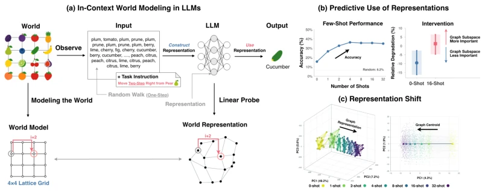
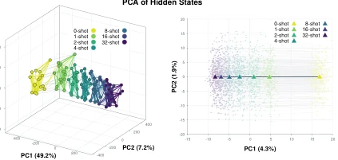
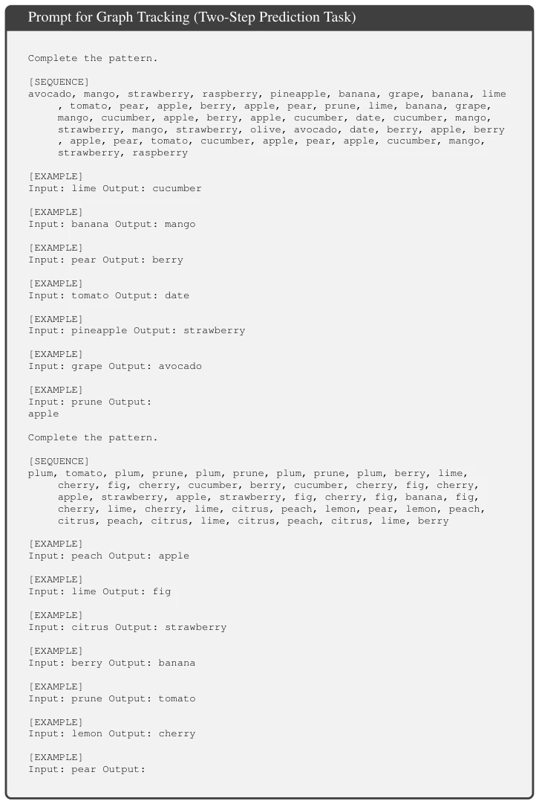
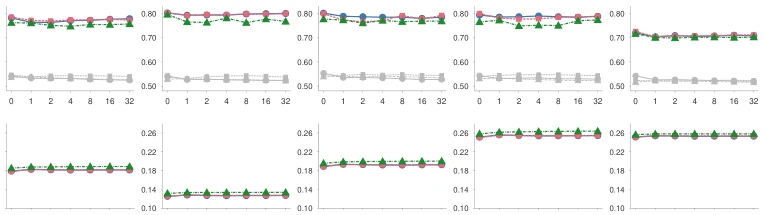
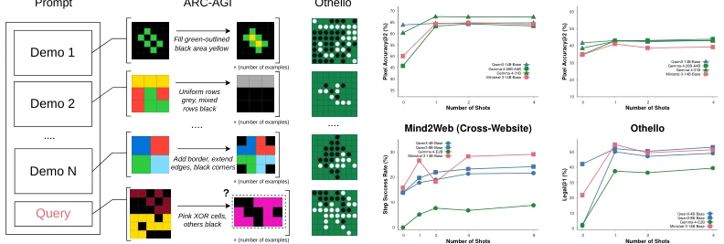
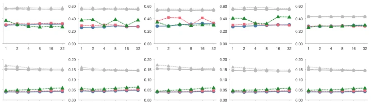
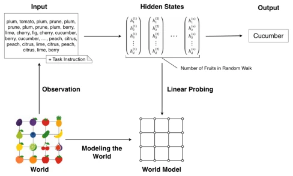
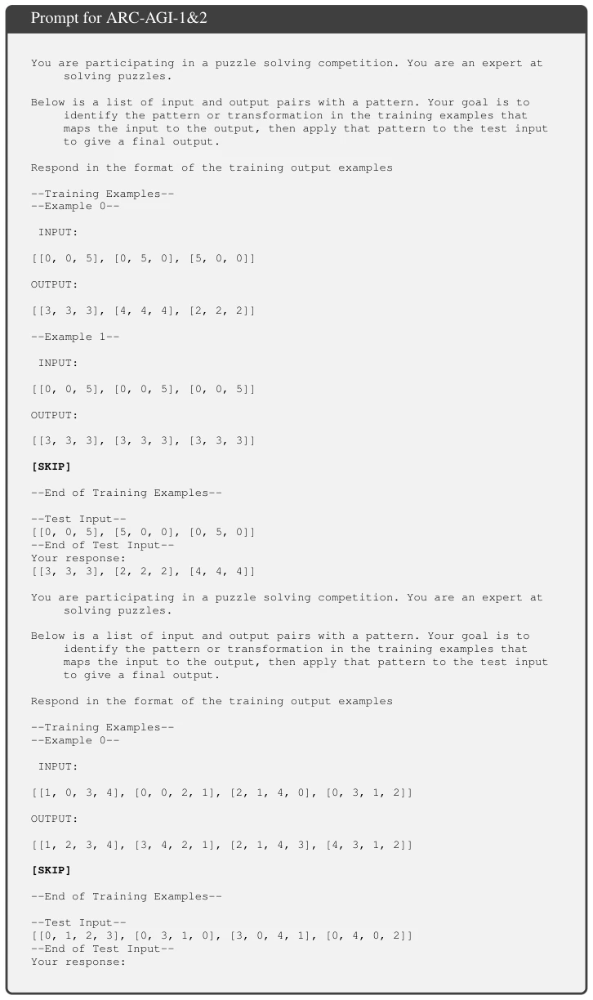
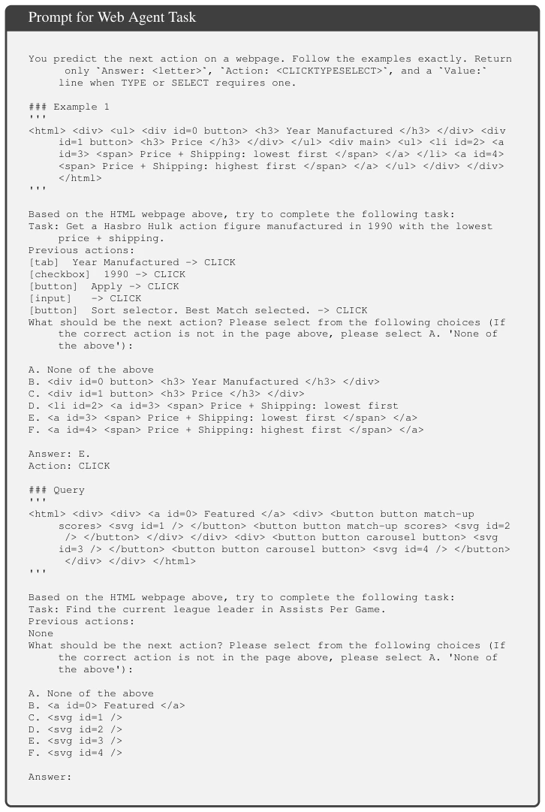
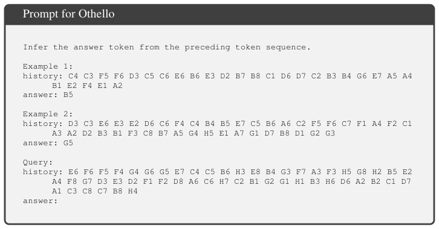

This paper reveals an awkward status quo of LLMs as agents: they can "imagine" world structures but do not "use" the imagined structures. It is like learning a map but failing to find the way. The authors find that few-shot demonstrations (Few-Shot) can magically activate this "implicit knowledge". Although the experiments are solid, limiting "world models" to static graph topology is slightly conservative, ignoring dynamic interactions. Moreover, the 2026 citation makes one suspect this is a preprint from the future (laughs). However, proving through intervention that representations are indeed "read" is very persuasive. It challenges the assumption that "construction equals usage", pointing out that the geometric position of the representation subspace is key, not the quality of the representation itself. This provides a new perspective for understanding ICL mechanisms, but also exposes the fragility of LLMs in complex reasoning.
研究动机Motivation
随着LLM成为智能体，理解其如何从观察中推断世界至关重要。Park et al. (2025) 证明LLM能构建上下文世界表征，但 Lepori et al. (2026) 指出它们无法利用这些表征进行预测，存在“构造”与“使用”的鸿沟。现有工作多关注参数更新或简单ICL，缺乏对Agent在开放环境中利用上下文记忆机制的深入剖析。本文旨在填补这一空白，探究何时LLM能克服这一局限，以及少样本演示如何起作用。这直接关系到Agent能否在未见过的环境中有效推理，对于实现真正的具身智能至关重要。
As LLMs become agents, understanding how they infer the world from observations is crucial. Park et al. (2025) prove LLMs can construct context world representations, but Lepori et al. (2026) point out they cannot utilize these representations for prediction, and there is a gap between "construction" and "usage". Existing work mostly focuses on parameter updates or simple ICL, lacking in-depth analysis of Agents utilizing context memory mechanisms in open environments. This paper aims to fill this gap, exploring when LLMs can overcome this limitation and how few-shot demonstrations work. This directly relates to whether Agents can reason effectively in unseen environments, which is crucial for achieving true embodied intelligence.

Figure 1: (a) Conceptual Framework of In-Context World Modeling. An LLM is provided with random walks generated on a graph topology, where each node is assigned a fruit, and instructed to move two steps to the right. We probe the internal representations to determine whether the model has constructed the latent graph. A linearly decodable subspace of these representations is termed a world representation. See Figure 11 for the actual prompt. In this paper, we treat cucumbers as fruits. (b) LLMs Learned to Use World Representation with Few Shot Demonstrations. Few shot demonstrations consisting of random walks, task instructions, and answers from worlds with the same topology but different assignments of fruits to nodes improve task performance. Interven- tions on the world representation s
The overall process is: construct a graph tracking task, input random walk sequences, and decode topological information in hidden states via Linear Probing. Innovations include: 1. Define "Shot Vector", quantifying the hidden state centroid shift caused by few-shot demonstrations; 2. Discover that the world representation subspace moves orthogonally with the number of demonstrations, rather than simply enhancing; 3. Implement Causal Intervention, erasing subspace information to verify its causal contribution to prediction. By comparing intervention effects under zero-shot and few-shot, prove that demonstrations change the "readability" of representations rather than "construction quality". Specifically, the model moves representations to an orthogonal subspace under few-shot, making downstream tasks easier to read. Additionally, subspace convergence under different topologies is analyzed, revealing the impact of demonstration count on representation geometry.

Figure 6: (Left) PCA of Shift in Hidden States of a Random Walk. PCA of 4 × 4 Lattice Grid at layer 36 of Qwen3-8B-Base (Right) PCA of Shifts in Hidden- State Centroids across Random Walks. PCA of 300 test samples per shot for 4×4 Lattice Grid at layer 20 of Qwen3-8B-Base. Points represent individual random walks and triangles indicate their means. In each panel, PCA is fit jointly to all activations shown.

Figure 11: Prompt for Graph Tracking Task. A 1-shot example generated from a 4×4 Lattice Grid. The answer is ”cucumber”. The query corresponds to the illustration in Figure 1 (a).

Figure 16: Probe Performance and Normalized Dirichlet Energy (DE). Probe AUROC (Top) and normalized DE of hidden states (Bottom) across shots and five graph topologies for layer 20 of three Qwen3 models. Gray lines show random feature probe baselines. Each condition is evaluated on 300 test samples.
Datasets cover graph tracking (5 topologies), ARC-AGI, Mind2Web web agent, Othello. Baselines are Qwen3, Gemma-4, etc. Metrics include accuracy, probe AUROC, and probability drop caused by intervention. Results show that increasing demonstration count significantly improves prediction accuracy, and subspace overlap decreases. Intervention experiments show that erasing world representations under few-shot causes greater performance damage, confirming representations are utilized more effectively. Similar gains are also observed in actual tasks like ARC and Othello, with good generalization. This proves the universality of few-shot demonstrations, remaining effective even in Different Worlds settings, which has guiding significance for practical Agent deployment.

Figure 8: (a) ARC-AGI and Othello with Different Worlds across Shots. In ARC-AGI, the world is the rule that maps inputs to outputs. In Othello, the world is the board state. (b) Performance across Different Numbers of Shots on ARC-AGI-1&2, Mind2Web, and Othello.

Figure 17: Node Distance Geometry Relative to Zero-Shot Setting. Node distance geometry rela- tive to zero-shot setting using probe projected representations (Top) and full hidden states (Bottom) across shots and five graph topologies for layer 20 of three Qwen3 models. Colored lines compare the same query across shots, while gray lines compare different query families with the same topol- ogy but different node vocabulary assignments. Lower values indicate more similar relative node geometry. Each condition uses 300 test samples.
其他图片Other Figures

Figure 9: Illustration of World Models in LLMs.

Figure 12: Prompt for ARC-AGI-1&2. A 1-shot example. The part marked [SKIP] is omitted for brevity.

Figure 13: Prompt for Web Agent Task. A 1-shot example of web agent tasks from Mind2Web dataset. The answer is ”F” and ”CLICK”.

Figure 14: Prompt for Othello. A 2-shot example of classical 8×8 Othello. The answer is ”A5”.